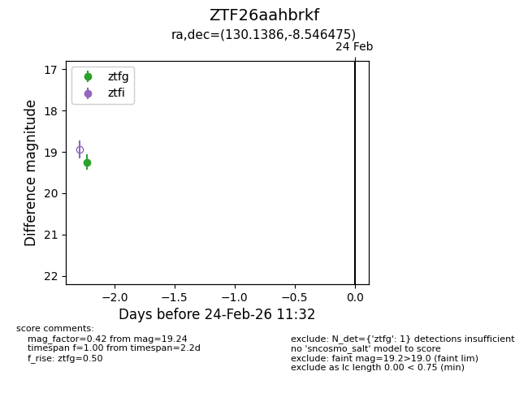
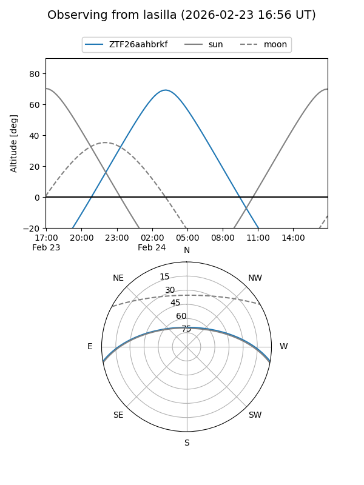
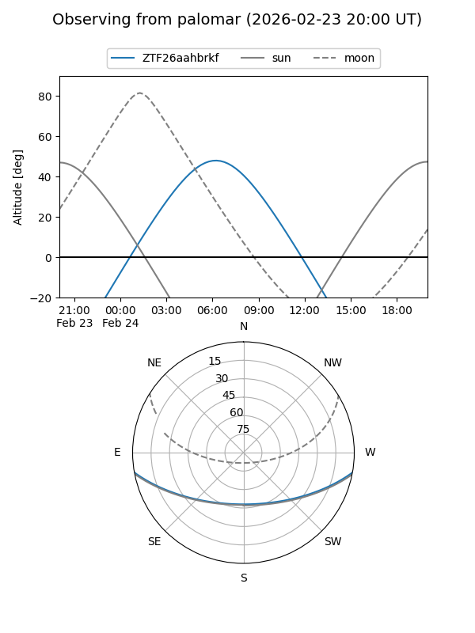

ZTF26aahbrkf
Target ZTF26aahbrkf at 2026-02-24 11:33
Aliases and brokers:
FINK: link
Lasair: link
ALeRCE: link
alt names
ZTF26aahbrkf (ztf,fink_ztf)
Coordinates:
equatorial (ra, dec) = 130.1386,-8.54648
equatorial (HMS+DMS) = 08:40:33.27,-08:32:47.31
galactic (l, b) = (234.0198,+19.60969)
Flags:
Photometry:
last ztfg=19.24
1 ztfg detections
Lightcurve

Visibility


Additional plots